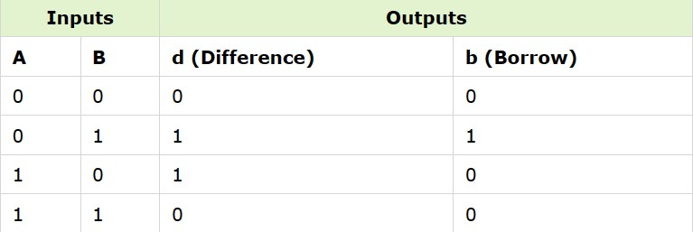
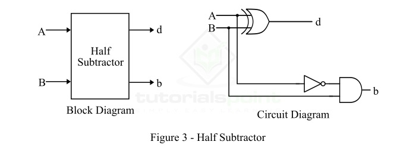
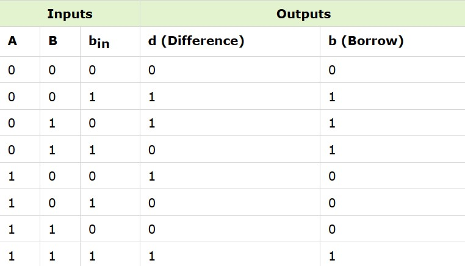
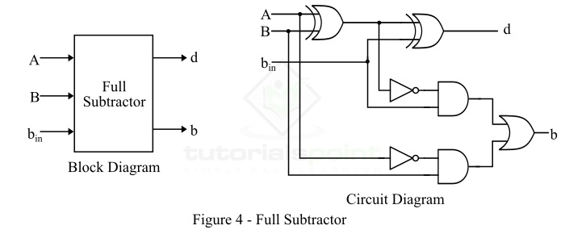

Subtractors
The subtraction of two binary numbers can be performed by taking the 1’s or 2’s complement of the inputs. By this method, the subtraction operation becomes an addition operation, and thus can be performed by using the adder circuits. This results in the reduction of hardware and cost. In the subtraction operation, each subtrahend bit (B) of the number is subtracted from its corresponding significant minuend bit (A) to obtain a difference bit.
Subtractors are classified into two types namely:
Half Subtractor:
A half-subtractor is a combinational logic circuit that have two inputs and two outputs (i.e. difference and borrow). The half subtractor produces the difference between the two binary bits at the input and also produces a borrow output (if any). In the subtraction (A-B), A is called as Minuend bit and B is called as Subtrahend bit.
Truth Table:
Logic Diagram:
Full Subtractor:
A full-subtractor is a combinational circuit that has three inputs A, B, bin and two outputs d and b. Where, A is the minuend, B is subtrahend, bin is borrow produced by the previous stage, d is the difference output and b is the borrow output. Since, the half subtractor can only be used to find the difference of LSBs (Least Significant Bits) of two binary numbers. Thus, if there is any borrow during the subtraction of the LSBs, it will affect the subtraction of the next bits of numbers. To overcome this problem of the half subtractor, a full subtractor is realized.
Truth Table:
Logic Diagram:
